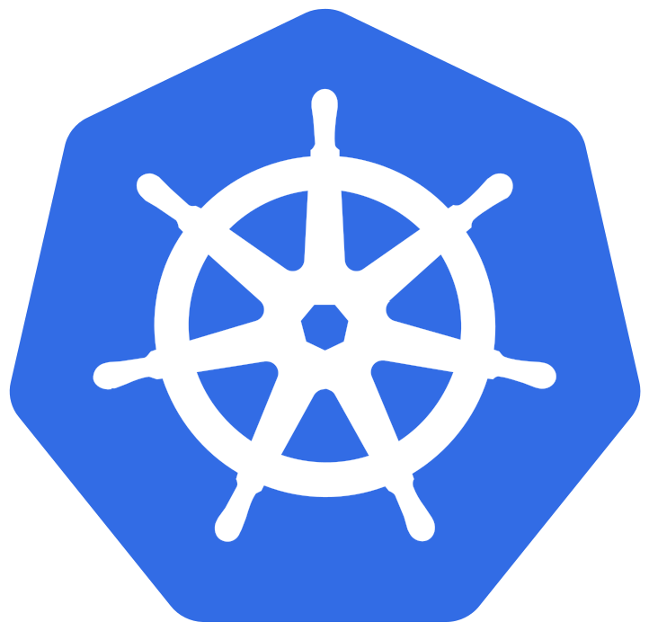
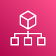
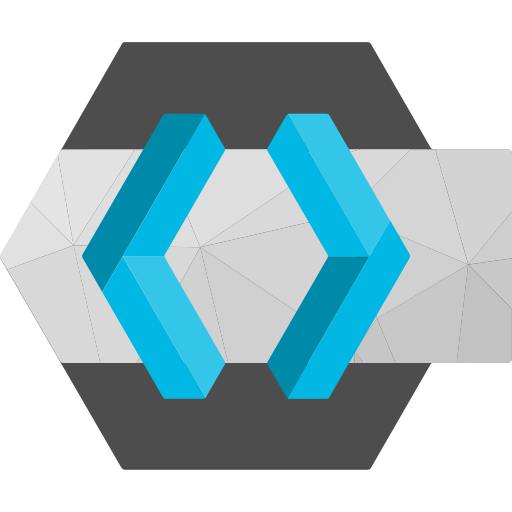
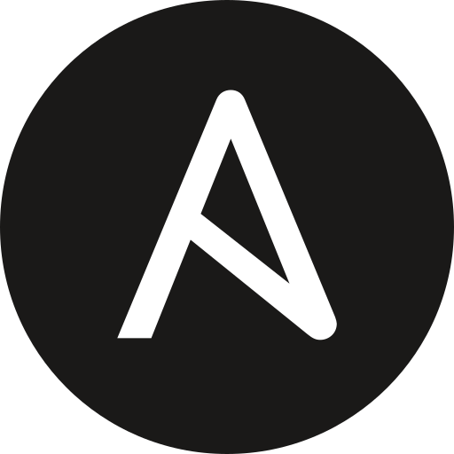
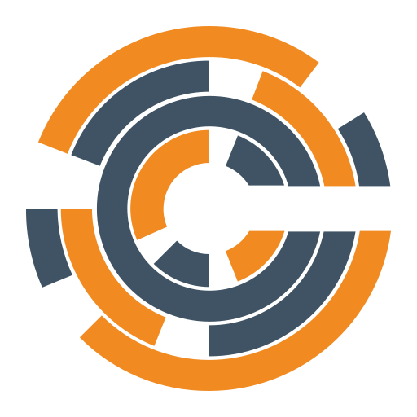
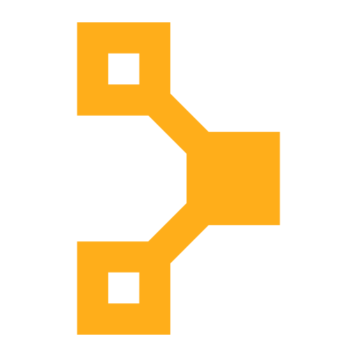
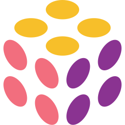
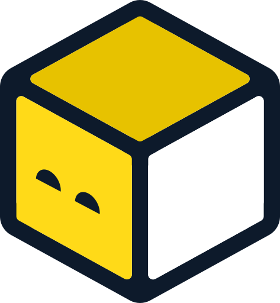

The CI/CD Anti-Pattern: Pipelines Running The World
Source code
Infra code
Deployment manifests
Test suites



The CI/CD Anti-Pattern: Pipelines Are Not Platforms
Source code
Infra code
Deployment manifests
Test suites
Pipelines are excellent for compiling code and producing deployable artefacts. They are designed for deterministic, one-time execution where a defined sequence of steps produces a predictable output.
However infrastructure and platform resources are fundamentally different: they require continuous reconciliation, lifecycle management, and drift correction.
For this reason, pipelines should remain focused on build and packaging tasks.
Key Benefits of Adopting a Universal Control Plane
The CI/CD Anti-Pattern: Pipelines Are Not Platforms
The Control Plane Evolution
1990sScriptingManual setup required running commands step by step. Early automation with scripts reduced effort but lacked scalability.
2000sConfiguration ManagementAutomation streamlined system configuration across servers, enabling scalability and remote management via SSH.





The Control Plane Evolution
1990sScriptingManual setup required running commands step by step. Early automation with scripts reduced effort but lacked scalability.
2000sConfiguration ManagementAutomation streamlined system configuration across servers, enabling scalability and remote management via SSH.
2010sInfrastructure as CodeBuild to work around APIs servimg as Code-to-Requests translator. No active management of ressources leading to a potential risk of drift.




The Control Plane Evolution
1990sScriptingManual setup required running commands step by step. Early automation with scripts reduced effort but lacked scalability.
2000sConfiguration ManagementAutomation streamlined system configuration across servers, enabling scalability and remote management via SSH.
2010sInfrastructure as CodeBuild to work around APIs servimg as Code-to-Requests translator. No active management of ressources leading to a potential risk of drift.
2020sControl PlanesContinuous reconciliation prevents drift, leveraging the Kubernetes ecosystem for automation and scalability while enabling self-service APIs for seamless multi-cloud management.
Simplifying Cross And Multi-cloud Services With Cloud Agnostic Custom Kubernetes Resources
Simplify, Abstract, Deliver
Fusion of K8s and Crossplane
Fusion of K8s and Crossplane
The Anatomy of Crossplane
Crossplane Packages XPKG
The CI/CD Anti-Pattern: Pipelines Running The World
The CI/CD Anti-Pattern: Pipelines Running The World
Unlocking Limitless Potential
Kubernetes Control Plane Bootstrapping The Self-Repairing Frontier
Kubernetes Control Plane Bootstrapping The Self-Repairing Frontier
Kubernetes Control Plane Bootstrapping The Self-Repairing Frontier
01
Backup Slides
02
Backup Slides
Bridging Autonomy and Standardization
Simplify, Abstract, Deliver
IDP Powered by Kubernetes Control Plane
Internal Developer Platform
03